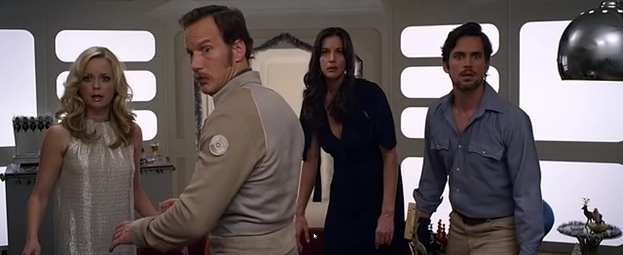

Space Station 76 is a directorial debut of Jack Plotnick, American film and television actor best known for his reoccurring role as Deputy Mayor Allan Finch in ‘Buffy the Vampire Slayer’. Plotnick says that the film’s idea came to him almost 10 years ago and he later developed the film’s script during a series of improvised sessions with some of his favourite actors at his home. The film saw some limited theatrical release in the United States before being offered via video-on-demand services.
The whole storyline of Space Station 76, a science fiction dark comedy, takes place aboard the Omega 76 Refuelling Station within an alternative timeline where the swinging 70s never ended.
The plot revolves primarily around four main characters: Captain Glenn Terry (Patrick Wilson), closeted gay man, who turns to alcohol and has a string of aborted suicide attempts, after his internal struggle with his suppressed homosexuality caused his break up with Daniel, his former co-pilot and boyfriend; Jessica Marlowe (Liv Tyler), who recently arrived at the station as the new co-pilot and replacement for Daniel, which puts her at odds with effeminate Captain Glenn; Ted (Matt Bomer), the unhappily married station’s mechanic with a robotic right hand, who develops a friendship with Jessica; and Misty (Marisa Coughlan), Ted’s egocentric and shallow wife and station 's nutritionist, who cheats on her husband, feels threatened by Jessica's arrival at the station, and is constantly on Valium prescribed by Dr. Bot, the lethargic on-board robotic psychologist.

Cuteness is supplied by Sunshine, Ted's and Misty's neglected, animal-loving daughter, and some titillation factor by ‘Space Angel’ (in the form of shapely Anna Sophia Berglund, Playboy Playmate) regularly seen by Ted outside the station after smoking a joint of marijuana, but it is Patrick Wilson who excels in his role as turtleneck-sweater-wearing, dodgy-moustache-sporting, closet homosexual Captain Glenn.